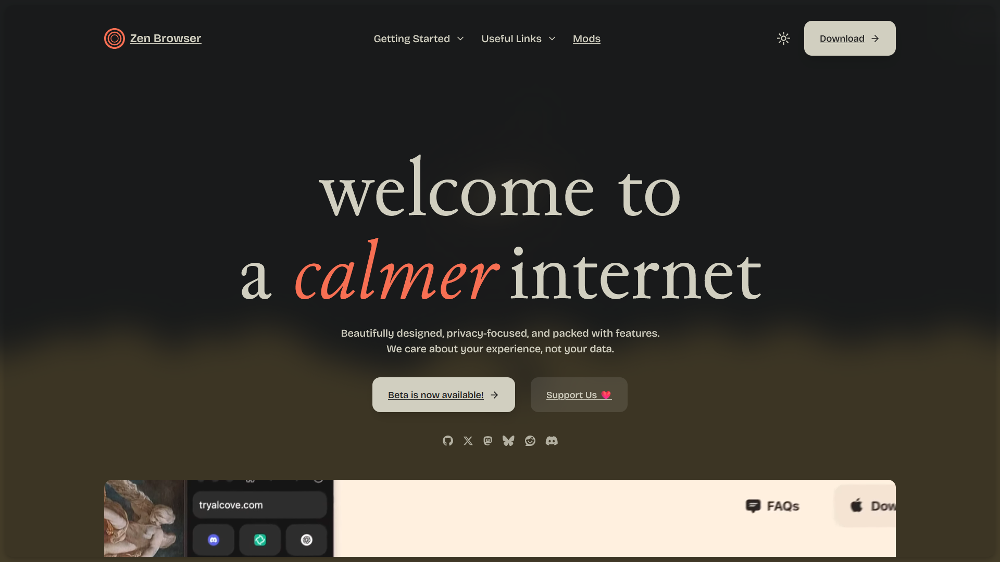
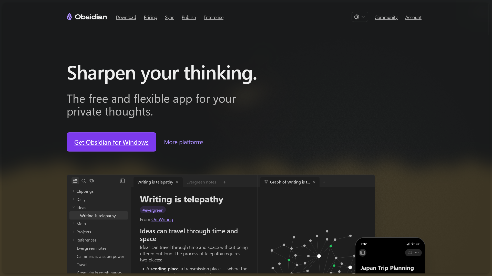
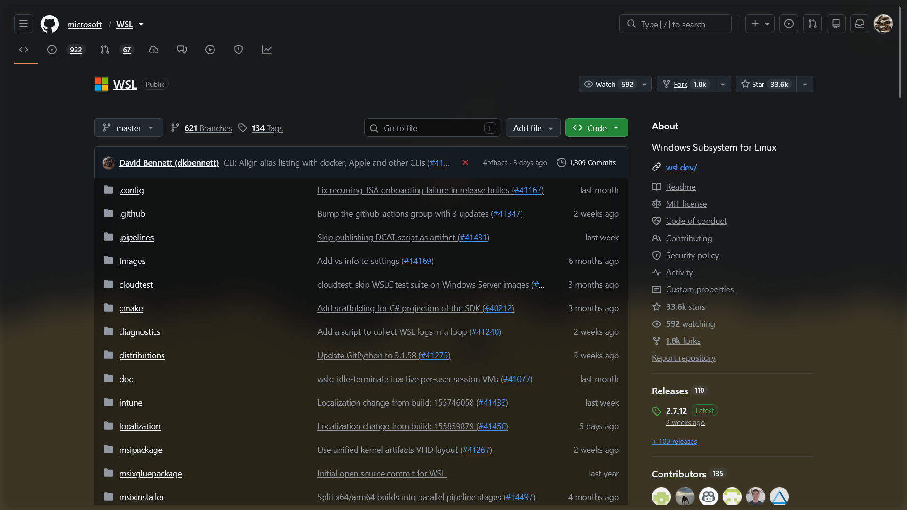
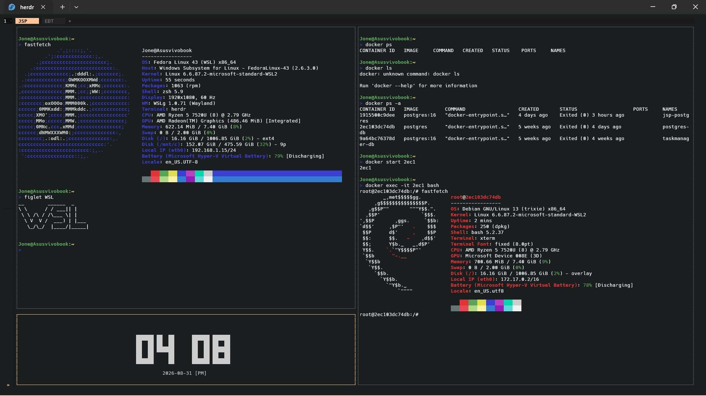

The True Purpose of Chess and How It Really Helps in Pattern Thinking
Chess makes us think like strategists and also helps us think in patterns. First, don't let these thoughts occupy you while playing, because you will gradually understand what skills you are gaining while playing chess and learn how to apply them in programs — and even in real life.
There are 3 crucial things we do to win, or rather, rules of chess make us do.
- Analyzing the opponent's move
- Calculating our possible moves
- Picking the move (right / wrong) within limited time
These three can be applied in real life like this:
- Analyzing the current problem / conflicts / needs
- Listing out the actions we can take
- Picking the right action within limited time
This literally helps us make decisions within a limited time. Whether you play chess for fun or are getting good at it as a cool hobby, you will eventually gain quick decision-making skills. And this helps you think in patterns, as you've moved those pieces more than a thousand times in the game — but applying it in real life is the real challenge.
You don't have to be a pro in chess to do this. Just apply the 3 steps in every critical situation. "Play the game in real life, find your own pattern, and follow what works for you."

How I built it - CANSAT GUI
The Beginning
As I joined the team, I was instructed to build the GUI using pyQt or even C++, because that's the usual way to build a GUI that connects with hardware components (Teensy 4.1 microcontroller, BME, BMP, IMU and other sensors, resistors, capacitors, etc.) which communicate through an XBee module for long-distance communication over about 1000m. All of this setup connects to the laptop running the GUI via USB cable.
This is the Actual flow
Web GUI & Design phase
But I didn't want to switch to Python or C++/Qt at that time, so I thought: what if I made this a web GUI? Yes, it's possible, it has more features, and the community support is huge.
I started designing the GUI pages in Figma, figuring out what was essential and how to organize the telemetry data and visualize it in a meaningful way. So I categorized each telemetry data into sections such as:
- Home page (contains all telemetry data)
- Primary Sensors (crucial telemetry data for the competition)
- Location (telemetry data related to geo-location)
- Orientation (data related to satellite orientation)
- Communication (data related to communications)
Implementation Phase
After completing the design and organizing the necessary assets, I planned how to implement it (the hardest part, to be honest).
I asked people on Discord how to implement this web-based GUI and also asked in subreddits for help.
One person responded well and helped me build the frontend. I used HTML, Tailwind CSS, and packages such as Socket.IO client, Chart.js, Leaflet.js, and Three.js for data visualization, all added via CDN for simplicity. Then I optimized the frontend visualization by swapping in a package more suitable for telemetry. That swap really made a great difference — ApexCharts <-> Chart.js. Because ApexCharts didn't support 10Hz speed, and even when it did, the visualization was too slow or got stuck at moments.
Now to the backend — this part was supposed to be done first, but my lack of knowledge at that time made me lean toward the frontend. But now I realize backend suits me a lot. So I started learning backend concepts and then chose Node.js, for one reason: I didn't want to switch languages. Then the important concepts came into play: events, eventListener, eventEmitter, Web Sockets, Socket.io.
Testing phase & Conclusion
After this, I spent my time testing and integrating the parts we built. I wrote more try, catch, throw as I found more edge cases during testing, and finally organized the folder structure and made it to the competition. As expected, all the other competitors built their GUI using either PyQt or C++/Qt. It doesn't matter which stack you use — it's up to us developers to make it better. The flow I made is below:

Softwares that I Love to use
August 31, 2026Zen Browser

There are many good reasons for using Zen Browser, but let's talk about the Default browser Chrome, It's not bad neither good as well, the horizontal tab manager, need to switch to a new tab if I have to use different account, Performance, its so visible and you can check in Task manager that Chrome consumes about ~ 30 - 100% of resources, meanwhile Zen consumes only about ~ 3 - 20% even at its peak load It won't cross 30%. Now I want to tell you the reasons I use Zen
- The Tab management: Vertical Tab manager, firefox browser already has this what's new here, its the compact mode that would open/close the sidebar just with hover/keyboard shortcut/customized shortcuts provided by them.
- Containers / Workspaces: Just like we devs use containers inside a computer, here they have containers in browser to have separate google accounts for a better experience with linked apps with multiple accounts and we can shift from one container to another just by clicking buttons at the bottom
- Folders: We can create folders and have multiple relevant sites in there, I use this categorizing sites I visit frequently (Blog, Docs, Media) and I often visit such as (Projects folder each with DB, Cloud, PaaS services site)
- Essential Tabs: Pin the sites we use the most such as Whatsapp, YT etc. some people use these applications locally but I will come to it later.
- Themes & Extensions: Great marketplace by Sine and most popular theme is Nebula, but I use Arc for simple interface but with same transparent & blur feel. Arc 2.0 is not just a theme it has many significant featurers such as downloading sites locally and it looks amazing and feels the same way of locally installed apps.
- Keyboard shortcuts: A feature I expect in all kind of applications is keyboard-driven support and customizing keyboard shortcuts. I won't expect this feature in designer softwares though 😅.
- Other Reasons: Split view, Glance, Updates that genuinely fixes things and add even improvements and Finally this is an Free and an Open source project, I would likely be a donor/contributor in near future.
Obsidian.md
I have been taking notes for more than 4 years and this is the one I will stick with forever, I have previously used OneNote from Microsoft and In mobile I used Xiaomi's default note taking app, those are good for simple note takings, OneNote is a good one to organize unstructured ideas in their whiteboard like interface, Its not strict and structured that's a problem and the way we organize notes totally changes in Obsidian

Obsidian is a markdown based note-taking software that is strict and not strict, structured and unstructured because its totally upto the users how they use this software.
Reasons to use Obsidian:
- Vaults: Many may see maitain just one vault but I prefer to split them into Primary and Secondary vault to avoid complexity, afterall that's the whole purpose.
- Markdown: Many people hate markdown as LLMS mass produced them, but I have been using this way before LLMs/AI got popular. its a simple syntax to create neat documents and someone who read and write a lot of readme.md this is great.
- Community Plugins: Obsidian is not open-source and I respect it and Kepano the CEO of the company explained it and its understandable. But we users as devs can create our features and publish them as plugins, so we can have impossible feature any note taking can ever think, the most popular one is Excalidraw plugin, yes Excalidraw inside your note taking app and so many includes extra ordinary plugins & themes published by devs and official team as well.
- Local Files: All these files are in local computer, they ain't getting anywhere, but if you want to sync with mobile obsidian app or other desktops, you can buy their subscription or use a free plugin that provides the same sync feature with clouds such as Drive, OneDrive and even advanced Git and Github yeah having version control of your notes is an unexpected feature to have. there is no limits in this software with the growing community. Obsidian currently have a business model of cloud subscriptions that include Sync feature and publish where you can publish your notes in public as notes in their explicit obsidian domain great feature for non programmers such as Bloggers/Authors.
- Other reasons/features: Web viewer,Graph view(Backlinks), Bases, Bookmarks, Command palette and countless plugins from the community.
WSL- Windows Subsystem for Linux

Most of the Dev community hates Microsoft, that's not what I wanna talk here cause no human is capable of defending that, but Microsoft has produced something really great that makes me appreciate Windows?, I never thought I would say this but WSL is one of the greatest package I use as my current dev environment. for context WSL is Linux inside windows not using VM / Dual boot that's the actual point it's a different implementation that uses the same resource that windows use not allocated separately for Linux, cause this is a software thats runs just like any other Windows Software.
The Reasons I use it are simple:
- Windows isn't the best dev environment out there.
- Linux CLI inside windows (Great for Dev environments such as having nvm, pipx, docker cli and great for usign CLI / TUI applications)
- Can install any distro as you want (doesn't occupy more than 1 to 3 GB), I only use Fedora for simplicity never had the need for more than one distro, even If I needed I would dev containers, well take a look

There are many CLI / TUI applications I love to discuss about, but that's for another day, thanks for making it this far, I wish you good luck in whatever pursue.

Should we use AI to code or do it ourselves
There are two sides to this:
- Business-oriented — use AI for a productivity-rich workflow: implement and fail fast, iterate until the best outcome, automate tasks, and focus on designing the architecture of the system .
- From some experienced developers' POV — don't let slop code enter your codebase, and use your brain to think and code.
I think I can draw the line: use AI to code, but do the thinking yourself. Another thing — you have to understand what the code actually does before pushing it or adding a new feature.
We can't totally neglect AI — it is really useful for boilerplate code and also good at teaching. If privacy is a concern, we can move to local LLMs, but the cost is literally huge for the GPU and computing power. My work isn't that secret, so I choose the normal path. I use OpenCode and Herdr with free AI models, since my use cases never exceeded that need. I'm also trying to use the bmad-method for the agents & skills and customize them to my use cases. In the future I'll try to add my workflow here.
As a Backend Engineer, I prefer to focus on the logic and content of this site, so I use AI for repetitive frontend work like making the layout responsive. I wouldn't let AI write the content of this site — I use it for boring work and never let it touch the organic content and creative thinking process.
Being an extremist never ends well, and we've seen this pattern in history many times. So learn to be in the gray area.
FTTA - Building a Faculty Time Tracking Application for 500+ Users
Most private institutions still track faculty attendance on paper or in messy spreadsheets. FTTA was built to fix that. It's a full-stack web application that lets the admin monitor faculty availability, track their sessions, and keep student attendance records - all from a single dashboard.
The core requirement was access control. Only emails from the organization's allowed domains can log in, implemented with Google OAuth 2.0 and role-based access control (RBAC) through Passport.js. Admins see everything; faculty log their sessions and student details.
It's running in production right now with 500+ active users, deployed using Docker, Vercel and Heroku. The codebase is currently closed source.
IMDF - A REST API to Filter Images by their Metadata
Image Meta Data Filter (IMDF) is a REST API that stores images in the cloud and lets you filter them by the metadata embedded in the files - geo-location, capture date, device name and more.
Uploads are handled with Multer, files are stored in Cloudinary, and the metadata is persisted in MongoDB. The API is built with Node.js and Express, and deployed using Docker and Render.
The server-side logic stays simple: extract the metadata on upload, store it alongside the file reference, and return filtered results based on query parameters.